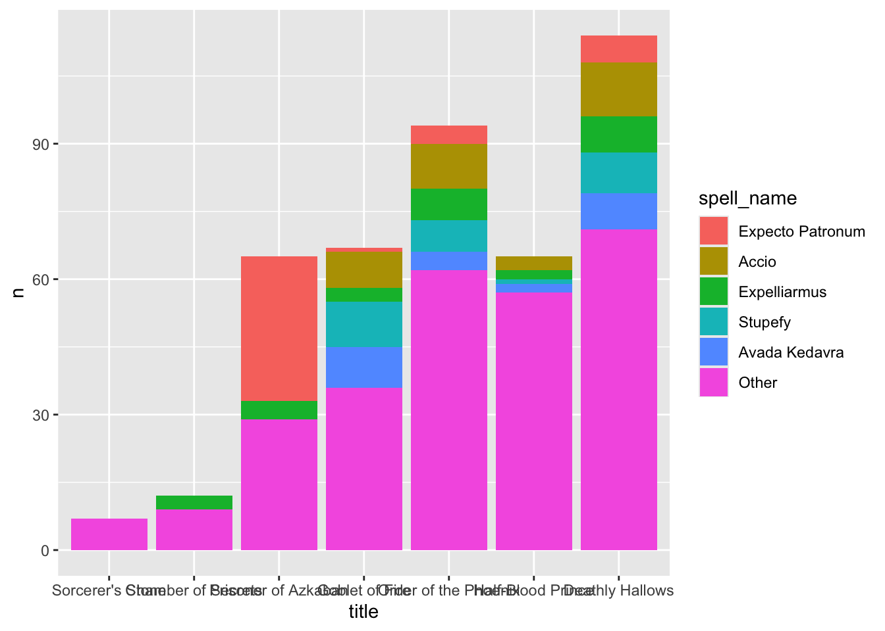
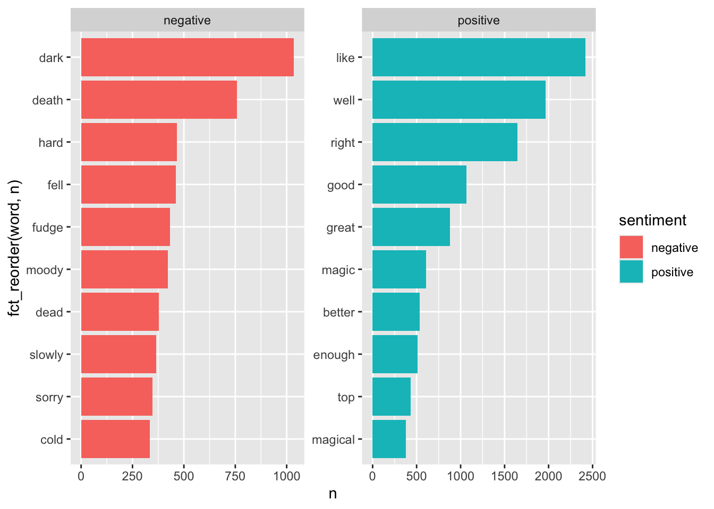
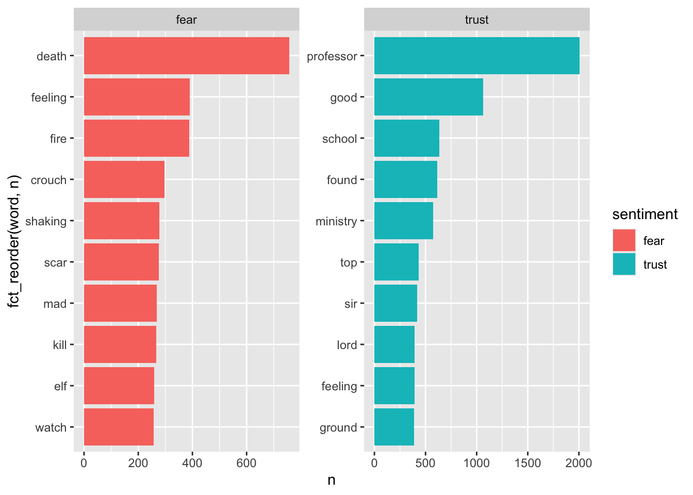
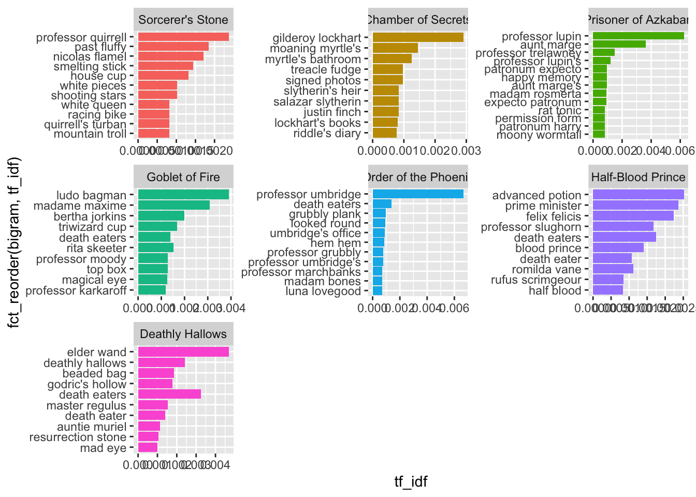
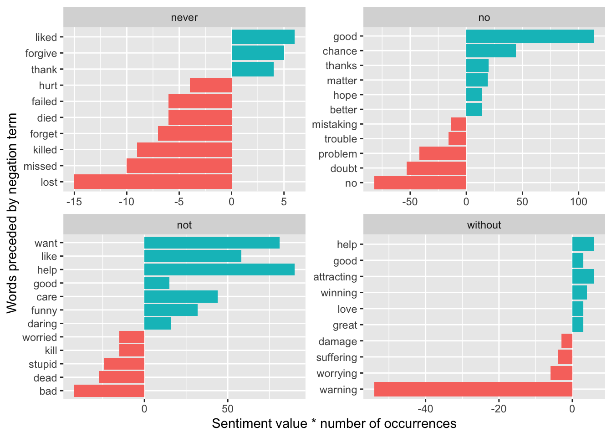
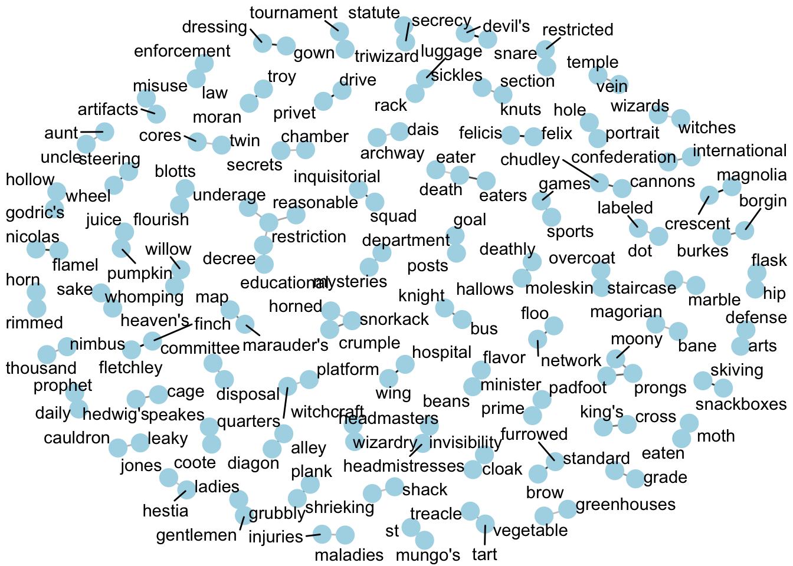
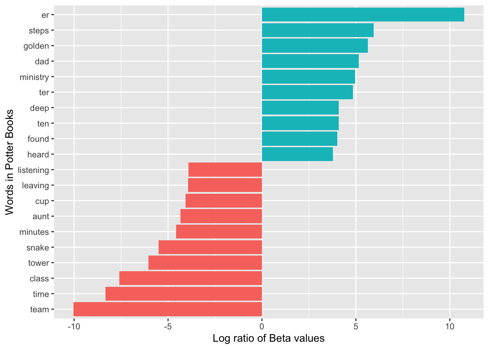

The potter_untidy dataset includes the text of 7 books of the Harry Potter series by J.K. Rowling. For a brief overview of the books (or movies), see this quote from Wikipedia:
Harry Potter is a series of seven fantasy novels written by British author J. K. Rowling. The novels chronicle the lives of a young wizard, Harry Potter, and his friends Hermione Granger and Ron Weasley, all of whom are students at Hogwarts School of Witchcraft and Wizardry. The main story arc concerns Harry’s conflict with Lord Voldemort, a dark wizard who intends to become immortal, overthrow the wizard governing body known as the Ministry of Magic, and subjugate all wizards and Muggles (non-magical people).
A few analyses from SDS 164:
# 10 most common words in each book, excluding stop wordspotter_tidy |>count(title, word) |>anti_join(stop_words) |>group_by(title) |>slice_max(n, n =10) |>mutate(rank =1:10) |>select(-n) |>pivot_wider (names_from = title, values_from = word) |>print(width =Inf)
Joining with `by = join_by(word)`
# A tibble: 10 × 8
rank `Sorcerer's Stone` `Chamber of Secrets` `Prisoner of Azkaban`
<int> <chr> <chr> <chr>
1 1 harry harry harry
2 2 ron ron ron
3 3 hagrid hermione hermione
4 4 hermione malfoy professor
5 5 professor lockhart lupin
6 6 looked professor black
7 7 snape weasley looked
8 8 dumbledore looked hagrid
9 9 uncle time snape
10 10 time eyes harry's
`Goblet of Fire` `Order of the Phoenix` `Half-Blood Prince` `Deathly Hallows`
<chr> <chr> <chr> <chr>
1 harry harry harry harry
2 ron hermione dumbledore hermione
3 hermione ron ron ron
4 dumbledore sirius hermione wand
5 looked professor looked dumbledore
6 weasley dumbledore slughorn looked
7 hagrid looked snape voldemort
8 eyes umbridge malfoy eyes
9 moody weasley time death
10 professor voice professor time
# Repeat above after removing character first and last namespotter_tidy |>count(title, word) |>anti_join(stop_words) |>anti_join(potter_names, join_by(word == firstname)) |>anti_join(potter_names, join_by(word == lastname)) |>group_by(title) |>slice_max(n, n =10, with_ties =FALSE) |>mutate(rank =1:10) |>select(-n) |>pivot_wider (names_from = title, values_from = word) |>print(width =Inf)
Joining with `by = join_by(word)`
# A tibble: 10 × 8
rank `Sorcerer's Stone` `Chamber of Secrets` `Prisoner of Azkaban`
<int> <chr> <chr> <chr>
1 1 professor professor professor
2 2 looked looked looked
3 3 uncle time harry's
4 4 time eyes eyes
5 5 harry's harry's time
6 6 door dobby door
7 7 eyes door head
8 8 yeh head voice
9 9 head voice heard
10 10 told school hand
`Goblet of Fire` `Order of the Phoenix` `Half-Blood Prince` `Deathly Hallows`
<chr> <chr> <chr> <chr>
1 looked professor looked wand
2 eyes looked time looked
3 professor voice professor eyes
4 crouch time hand death
5 time door eyes time
6 wand head voice voice
7 voice harry's dark harry's
8 head eyes wand door
9 told wand door hand
10 harry's hand head head
# still get "harry's" and "professor" but otherwise looks good# top 10 names in each book (after excluding "the")potter_tidy |>count(title, word) |>semi_join(potter_names, join_by(word == firstname)) |>filter(word !="the") |># ADD for #6group_by(title) |>slice_max(n, n =10, with_ties =FALSE) |>mutate(rank =1:10) |>select(-n) |>pivot_wider (names_from = title, values_from = word) |>print(width =Inf)
# A tibble: 10 × 8
rank `Sorcerer's Stone` `Chamber of Secrets` `Prisoner of Azkaban`
<int> <chr> <chr> <chr>
1 1 harry harry harry
2 2 ron ron ron
3 3 hermione hermione hermione
4 4 dudley fred sirius
5 5 vernon ginny neville
6 6 neville sir madam
7 7 great george great
8 8 petunia great fred
9 9 nearly percy vernon
10 10 madam nearly percy
`Goblet of Fire` `Order of the Phoenix` `Half-Blood Prince` `Deathly Hallows`
<chr> <chr> <chr> <chr>
1 harry harry harry harry
2 ron hermione ron hermione
3 hermione ron hermione ron
4 cedric sirius ginny great
5 sirius fred great lord
6 fred george sir luna
7 great neville lord bill
8 george ginny fred ginny
9 percy great tom albus
10 rita luna draco fred
# A tibble: 7 × 4
title num_spells_cast spells_per_10kwords num_unique_spells
<fct> <int> <dbl> <dbl>
1 Sorcerer's Stone 7 0.899 4
2 Chamber of Secrets 12 1.41 9
3 Prisoner of Azkaban 65 6.17 14
4 Goblet of Fire 67 3.49 27
5 Order of the Phoenix 94 3.63 28
6 Half-Blood Prince 65 3.79 24
7 Deathly Hallows 114 5.77 34
# plot of top spells by bookpotter_tidy |>left_join(potter_spells, join_by(word == first_word)) |>drop_na(spell_name) |>mutate(spell_name =fct_infreq(spell_name),spell_name =fct_lump_n(spell_name, n =5)) |>count(title, spell_name) |>ggplot() +geom_col(aes(x = title, y = n, fill = spell_name), position ="stack")

New stuff!
What words contribute the most to negative and positive sentiment scores? Show a faceted bar plot of the top 10 negative and the top 10 positive words (according to the “bing” lexicon) across the entire series.
bing_sentiments <-get_sentiments(lexicon ="bing")# potter_tidy |># inner_join(bing_sentiments, relationship = "many-to-many") |># count(sentiment, word, sort = TRUE) |># group_by(sentiment) |># slice_max(n, n=10) |># ungroup() |># ggplot(aes(x = fct_reorder(word, n), y = n, fill = sentiment)) +# geom_col() +# coord_flip() +# facet_wrap(~ sentiment, scales = "free")potter_tidy |>inner_join(bing_sentiments, relationship ="many-to-many") |>count(sentiment, word, sort =TRUE) |>group_by(sentiment) |>slice_max(n, n=10) |>ungroup() |>ggplot(aes(x =fct_reorder(word, n), y = n, fill = sentiment)) +geom_bar(stat ="identity") +facet_wrap(~ sentiment, scales ="free") +coord_flip()
Joining with `by = join_by(word)`

Find a list of the top 10 words associated with “fear” and with “trust” (according to the “nrc” lexicon) across the entire series.
nrc_sentiments <-get_sentiments(lexicon ="nrc")nrc_sentiments |>filter(sentiment =="fear"| sentiment =="trust") |>inner_join(potter_tidy, relationship ="many-to-many") |>count(sentiment, word, sort =TRUE) |>group_by(sentiment) |>slice_max(n, n=10) |>ungroup() |>ggplot(aes(x =fct_reorder(word, n), y = n, fill = sentiment)) +geom_bar(stat ="identity") +facet_wrap(~ sentiment, scales ="free") +coord_flip()
Joining with `by = join_by(word)`

Make a wordcloud for the entire series after removing stop words using the “smart” source.
Create a wordcloud with the top 20 negative words and the top 20 positive words in the Harry Potter series according to the bing lexicon. The words should be sized by their respective counts and colored based on whether their sentiment is positive or negative. (Feel free to be resourceful and creative to color words by a third variable!)
Make a faceted bar chart to compare the positive/negative sentiment trajectory over the 7 Harry Potter books. You should have one bar per chapter (thus chapter becomes the index), and the bar should extend up from 0 if there are more positive than negative words in a chapter (according to the “bing” lexicon), and it will extend down from 0 if there are more negative than positive words.
Repeat (5) using a faceted scatterplot to show the average sentiment score according to the “afinn” lexicon for each chapter. (Hint: use mutate(chapter_factor = factor(chapter)) to treat chapter as a factor variable.)
# A tibble: 89,258 × 2
bigram n
<chr> <int>
1 professor mcgonagall 578
2 uncle vernon 386
3 harry potter 349
4 death eaters 346
5 harry looked 316
6 harry ron 302
7 aunt petunia 206
8 invisibility cloak 192
9 professor trelawney 177
10 dark arts 176
# ℹ 89,248 more rows
potter_goodgrams |>group_by(title) |>arrange(desc(tf_idf)) |>slice_max(tf_idf, n =10) |>ggplot(aes(x =fct_reorder(bigram, tf_idf), y = tf_idf, fill = title)) +geom_col(show.legend =FALSE) +coord_flip() +facet_wrap(~title, scales ="free")

Find which words contributed most in the “wrong” direction using the afinn sentiment combined with how often a word appears among all 7 books. Come up with a list of 4 negation words, and for each negation word, illustrate the words associated with the largest “wrong” contributions in a faceted bar plot.
# An example of expanding the list of negation wordsnegation_words <-c("not", "no", "never", "without")potter_bigram_separated <- potter_bigram |>separate(bigram, c("word1", "word2"), sep =" ") |>count(word1, word2, sort =TRUE) |>filter(!is.na(word1) &!is.na(word2)) negated_words <- potter_bigram_separated |>filter(word1 %in% negation_words) |>inner_join(afinn_sentiments, by =c(word2 ="word")) |>arrange(desc(n))negated_words |>mutate(contribution = n * value) |>arrange(desc(abs(contribution))) |>group_by(word1) |>slice_max(abs(contribution), n =10) |>ungroup() |>mutate(word2 =reorder(word2, contribution)) |>ggplot(aes(n * value, word2, fill = n * value >0)) +geom_col(show.legend =FALSE) +facet_wrap(~ word1, scales ="free") +labs(x ="Sentiment value * number of occurrences",y ="Words preceded by negation term")

Select a set of 4 “interesting” terms and then use the Phi coefficient to find and plot the 6 words most correlated with each of your “interesting” words. Start by dividing potter_tidy into 80-word sections and then remove names and spells and stop words.
Create a network graph to visualize the correlations and clusters of words that were found by the widyr package in (10).
# for a correlation over .45potter_cors |>filter(correlation > .45) |>graph_from_data_frame() |>ggraph(layout ="fr") +geom_edge_link(aes(edge_alpha = correlation), show.legend =FALSE) +geom_node_point(color ="lightblue", size =5) +geom_node_text(aes(label = name), repel =TRUE) +theme_void()

Use LDA to fit a 2-topic model to all 7 Harry Potter books. Be sure to remove names, spells, and stop words before running your topic models. (a) Make a plot to illustrate words with greatest difference between two topics, using log ratio. (b) Print a table with the gamma variable for each document and topic. Based on (a) and (b), can you interpret what the two topics represent?
potter_dtm <- potter_tidy |>filter(!word %in% stop_words$word,!word %in% potter_names$firstname,!word %in% potter_names$lastname,!word %in% potter_spells$first_word,!word %in% potter_spells$second_word,!is.na(word)) |>group_by(title) |>count(word) |>cast_dtm(title, word, n)# set a seed so that the output of the model is predictablepotter_lda <-LDA(potter_dtm, k =2, control =list(seed =1234))potter_topics <-tidy(potter_lda, matrix ="beta")potter_topics
# # Find the most common words within each topic# potter_top_terms <- potter_topics |># group_by(topic) |># slice_max(beta, n = 10) |> # ungroup() |># arrange(topic, -beta)# potter_top_terms |># mutate(term = reorder_within(term, beta, topic)) |># ggplot(aes(beta, term, fill = factor(topic))) +# geom_col(show.legend = FALSE) +# facet_wrap(~ topic, scales = "free") +# scale_y_reordered()# Find words with greatest difference between two topics, using log ratiopotter_beta_wide <- potter_topics |>mutate(topic =paste0("topic", topic)) |>pivot_wider(names_from = topic, values_from = beta) |>filter(topic1 > .001| topic2 > .001) |>mutate(log_ratio =log2(topic2 / topic1))potter_beta_wide
# A tibble: 200 × 4
term topic1 topic2 log_ratio
<chr> <dbl> <dbl> <dbl>
1 air 0.00165 0.00149 -0.150
2 answer 0.000295 0.00108 1.87
3 appeared 0.000490 0.00121 1.31
4 arm 0.00170 0.000407 -2.06
5 aunt 0.00199 0.0000977 -4.35
6 bed 0.000836 0.00187 1.16
7 bit 0.00111 0.00204 0.882
8 boy 0.000513 0.00237 2.20
9 burst 0.00102 0.000266 -1.94
10 called 0.000422 0.00173 2.04
# ℹ 190 more rows
potter_beta_wide |>arrange(desc(abs(log_ratio))) |>slice_max(abs(log_ratio), n =20) |>mutate(term =reorder(term, log_ratio)) |>ggplot(aes(log_ratio, term, fill = log_ratio >0)) +geom_col(show.legend =FALSE) +labs(x ="Log ratio of Beta values",y ="Words in Potter Books")

potter_documents <-tidy(potter_lda, matrix ="gamma")# Find documents for each topicpotter_documents |>group_by(topic) |>slice_max(gamma, n =10) |>ungroup() |>arrange(topic, -gamma)
# A tibble: 14 × 3
document topic gamma
<chr> <int> <dbl>
1 Chamber of Secrets 1 0.519
2 Prisoner of Azkaban 1 0.501
3 Half-Blood Prince 1 0.484
4 Sorcerer's Stone 1 0.481
5 Order of the Phoenix 1 0.457
6 Goblet of Fire 1 0.456
7 Deathly Hallows 1 0.444
8 Deathly Hallows 2 0.556
9 Goblet of Fire 2 0.544
10 Order of the Phoenix 2 0.543
11 Sorcerer's Stone 2 0.519
12 Half-Blood Prince 2 0.516
13 Prisoner of Azkaban 2 0.499
14 Chamber of Secrets 2 0.481
Topic 1: Chamber of Secrests and Prisoner of Azkaban, Topic 2: Half-Blood Prince, Sorcerer’s Stone, Order of the Phoenix, Goblet of Fire and Deathly Hallows. Topic 1 is Book 2 and 3, they’re kind of related in what is going on in the series so the words and characters are similar.